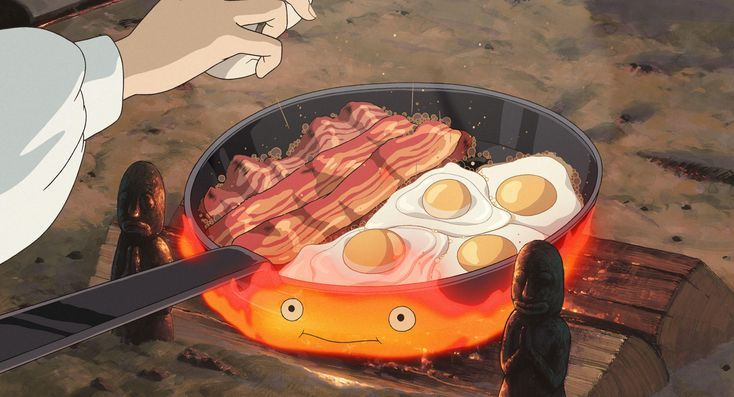

Howl's Breakfast
Descrição
Inspirado no famoso café da manhã do filme *O Castelo Animado*, este prato traz ovos fritos, bacon crocante e pão tostado preparados com o charme mágico de Calcifer.
Ingredientes
- 4 ovos
- 6 fatias de bacon
- 4 fatias de pão rústico
- Manteiga a gosto
- Sal e pimenta-do-reino a gosto
Modo de Preparo
- Aqueça uma frigideira grande (ou uma chapa, como Calcifer faria!).
- Adicione o bacon e frite até ficar bem crocante. Reserve.
- Na mesma frigideira, quebre os ovos e frite-os com a gordura do bacon.
- Tempere os ovos com sal e pimenta a gosto.
- Enquanto isso, toste as fatias de pão na manteiga até dourar.
- Monte o prato com os ovos, o bacon crocante e o pão ao lado.
Dicas do Chef
Se quiser deixar o prato ainda mais fiel ao filme, frite os ovos com gemas bem visíveis e use bacon grosso. Sirva com uma caneca de chá ou leite quente para completar a experiência Ghibli!